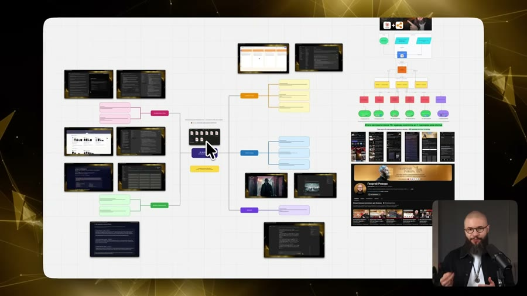
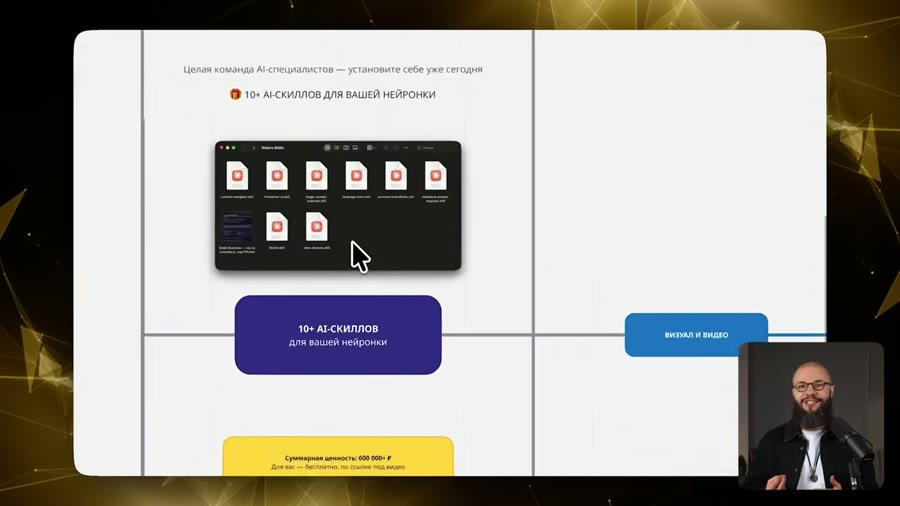
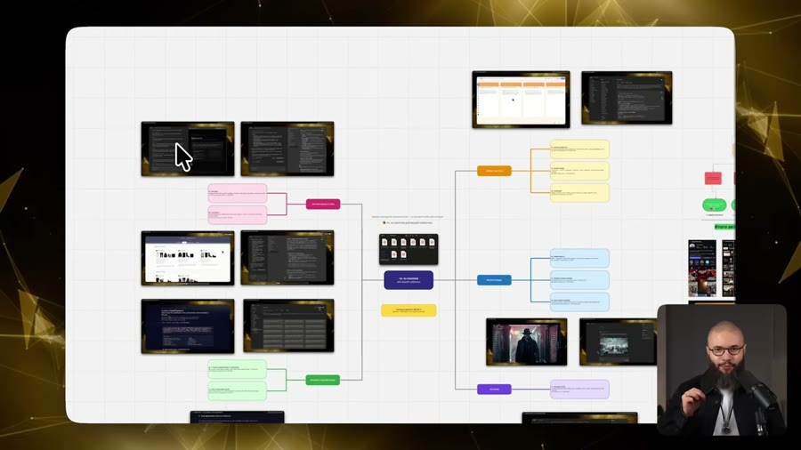
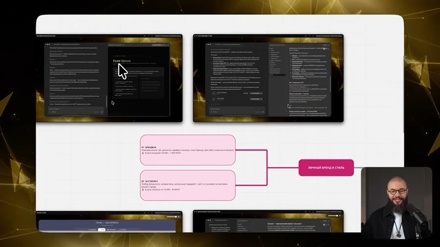
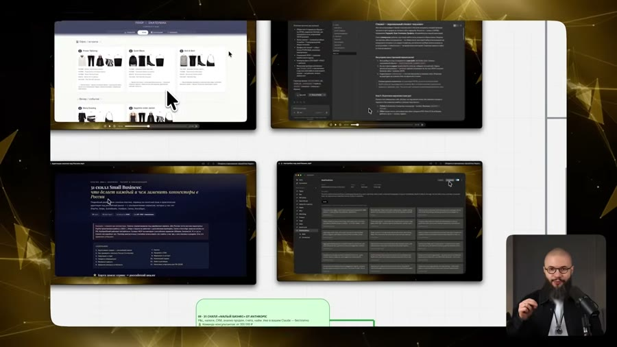
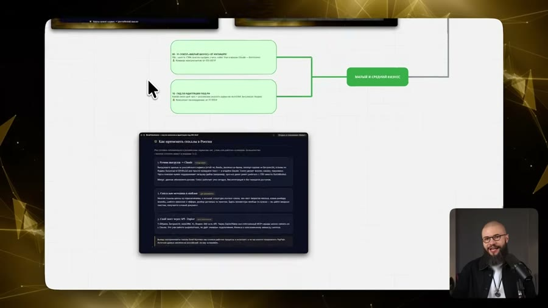
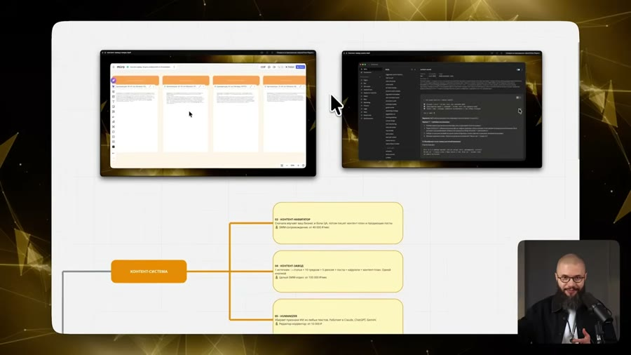
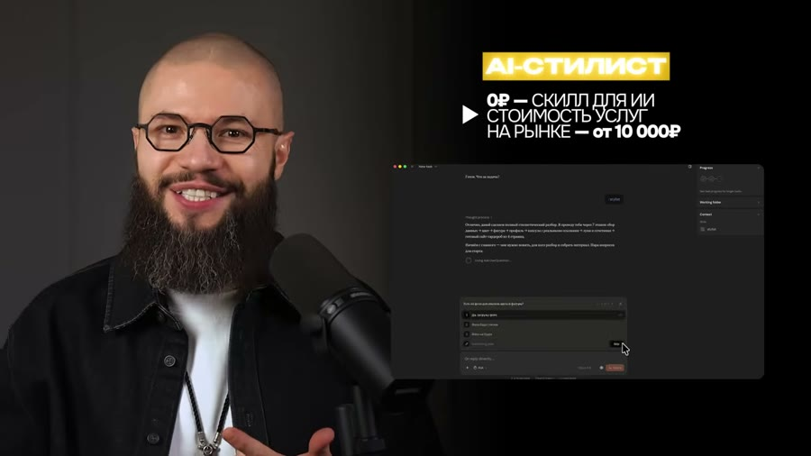
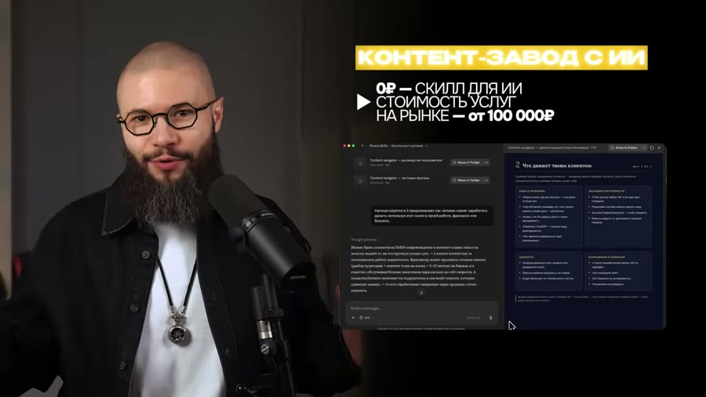
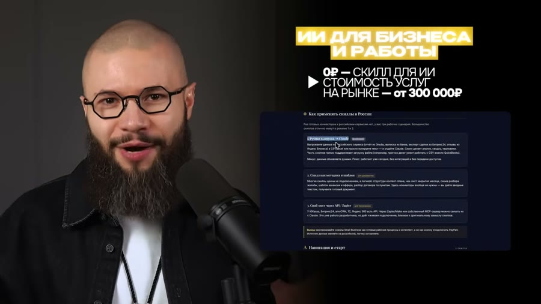

Разбор интро: «Эти 10+ Claude Skills ЗАРАБОТАЮТ денег, пока ты спишь»
Георгий Ривера · YouTube · 6 июня 2026 · ролик целиком 25:40 · 58 тыс. просмотров
Интро — первый блок ролика, где автор не объясняет тему, а продаёт досмотр. Разбирается только он.
Граница интро: 0:00–2:06. Определена по речи, а не по монтажу: на 2:05 звучит переключатель «А теперь давайте начинать практику», после него глаголы меняются с будущего («передам», «дам», «появится») на настоящее («сейчас на экране вы видите»), и начинается разбор первого скилла. Плотность склеек тут не помогла — она ровная и в интро, и дальше: автор монтирует весь ролик одинаково плотно.
2:06длина интро. Типичное — 60–90 секунд, это длиннее нормы
12склеек внутри интро — примерно одна в 10 секунд
10,5 ссредний план. Для интро это медленно: обычно 3–6 секунд
135слов в минуту. Норма разговорной русской речи ~130 — автор говорит почти спокойно
284слова произнесено за интро
10законченных мыслей
13сцен (смысловых, не склеек)
3. Пост
Я отдам вам не десять инструментов, а десять специалистов
Каждый скилл в этой подборке — не кнопка и не промпт, а целая команда AI-специалистов. Если бы вы заказывали такую работу у людей, каждая обошлась бы от десяти до ста тысяч рублей, а иногда и заметно дороже.
Представьте: сегодня вечером вы ставите эти скиллы на ноутбук — и у вас появляется брендбук. Свой, клиентский, для чужого бизнеса. Появляется стилист, который разбирает вашу внешность, готовит отчёт и собирает гардероб капсулами со ссылками на магазины в вашем городе. Появляется не контент-завод даже, а система, которая делает текст, видео и картинки под любую соцсеть.
Дальше — набор скиллов для малого и среднего бизнеса, тридцать один специалист, и я покажу прямо в кадре, как подогнать их под вашу компанию. Всё раскрывать не буду, оставлю место сюрпризу: в выпуске будет заметно больше.
И главное. Каждый навык, который вы унесёте после этого видео, решает конкретную задачу не только вашу. Из любого можно собрать услугу, сервис или приложение — и зарабатывать на этом настоящие деньги.
Если вас останавливает установка, регистрация и оплата нейросетей из России или СНГ — для участников моего Telegram-сообщества эта проблема уже решена, ссылка под видео. Пользуйтесь нейросетями в удовольствие, это меняет жизнь прямо сегодня.
А теперь давайте начинать практику.
4. Цепочка ходов
Обещание сверх заявленного→Перевод в деньги→Витрина: что появится сегодня→Недосказанность→Не пользуйся — продавай→Снятие препятствия→Увод в Telegram→Переключатель на практику
Чего в этом заходе нет: боли, показа боли живьём, «не ты один», снятия вины, авторитета источника, просьбы досмотреть. Автор не строит проблему — он сразу открывает витрину и переводит всё в рубли. Авторитет («моя компания за 10 лет сделала 100+ брендбуков») появляется только после границы, уже внутри основной части.
5. Разбор по мыслям
0:04Обещание сверх заявленного154 сл/мин · разгон
«Я передам сейчас вам не просто 10 глубоко продуманных скиллов для вашей нейронки, а кое-что гораздо более ценное».


0:11Перевод в деньги145 сл/мин
«Каждый скилл в этой подборке — это целая команда AI-специалистов. И если бы вы заказывали эти услуги у людей, то заплатили бы за каждую от 10 до 100 000 рублей, а может быть, и гораздо больше».




0:23Витрина 1: брендбук157 сл/мин · разгон
«Вы можете себе это представить, что уже сегодня вы установите себе эти скиллы на ноутбук, и у вас появится брендбук. Сможете делать его для себя, для своих клиентов и даже для бизнеса».

0:36Витрина 2: стилист109 сл/мин · тормозит
«Стилист, который сделает глубокий анализ вашей внешности либо внешности ваших клиентов, подготовит отчёт и сделает персональную подборку гардероба, разбив всё на капсулы и конкретные ссылки конкретных магазинов в вашем городе».

0:53Витрина 3: контент116 сл/мин · тормозит
«Далее у вас появится не просто контент-завод, а целая система по генерации любого вида контента. Текстовый, видеоформат, изображение — для любых социальных сетей».

1:08Витрина 4: бизнес140 сл/мин · разгон
«Также 31 специалист. Набор скиллов для малого и среднего бизнеса. Я покажу, как адаптировать их тут же, под вашу компанию».

1:17Недосказанность112 сл/мин · тормозит
«И чтобы не раскрывать все карты и оставить место приятным сюрпризом, пока на этом остановлюсь. И в выпуске дам гораздо больше».
1:25Не пользуйся — продавай150 сл/мин · разгон
«А ещё это значит, что каждый AI-навык, который вы получите после просмотра этого видео, сможет решить конкретную задачу не только для вас. Вы также сможете создать из этого услугу, сервис, приложение и по факту зарабатывать на этом реальные деньги».
1:43Снятие препятствия + Telegram145 сл/мин
«Если у вас есть сложности с установкой, регистрацией и оплатой нейронок в России или в СНГ, то эту проблему для участников своего Telegram-сообщества я решил. Просто перейдите по ссылке под этим видео».
2:02Переключатель135 сл/мин
«Ведь это действительно меняет жизнь прямо сегодня. А теперь давайте начинать практику».